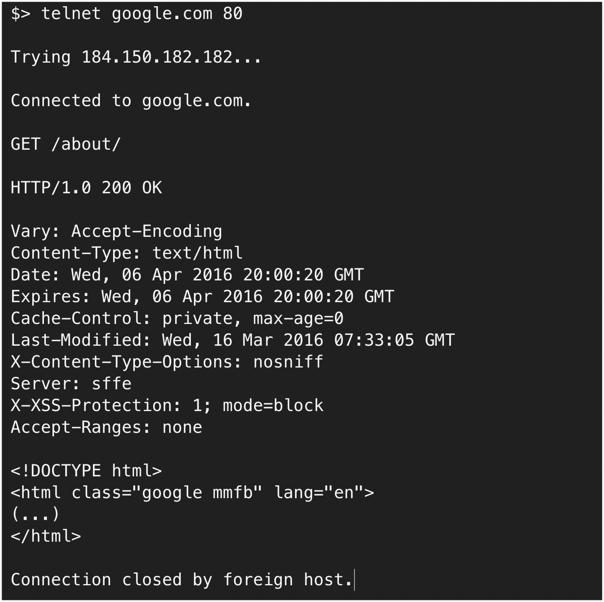
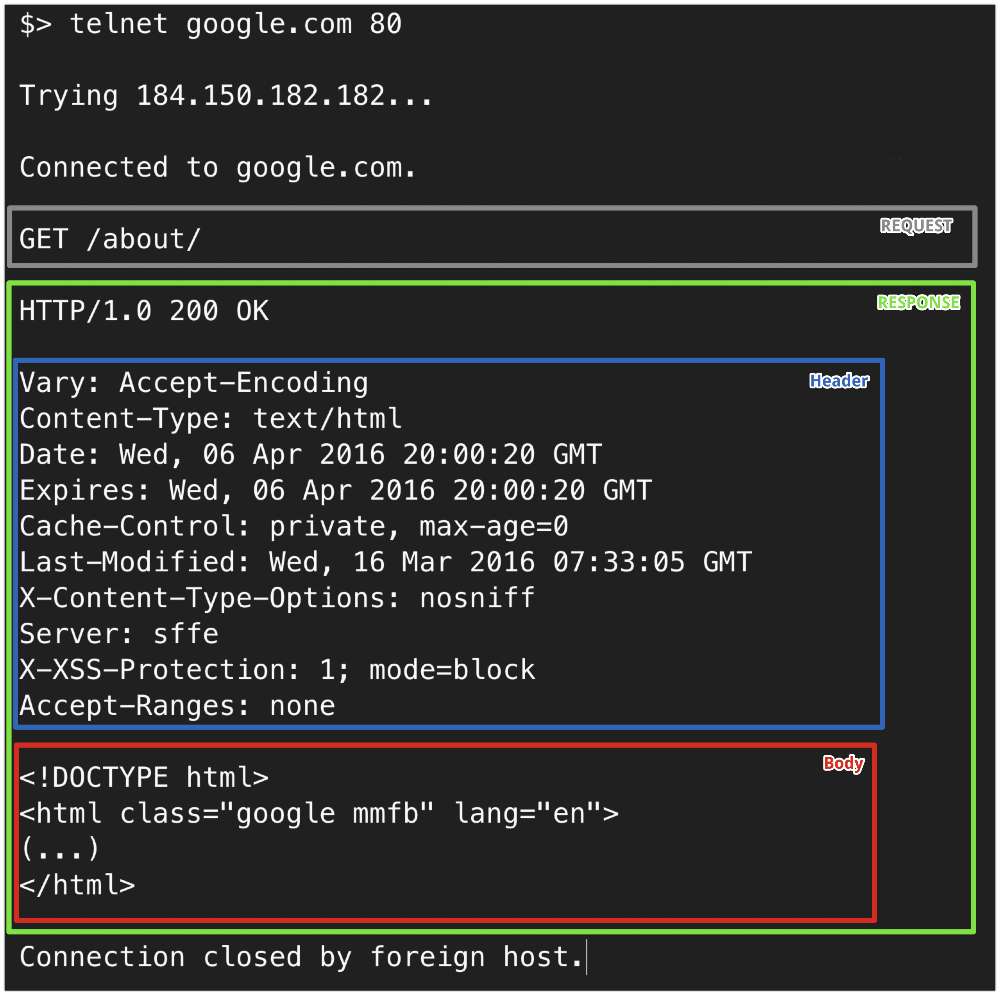
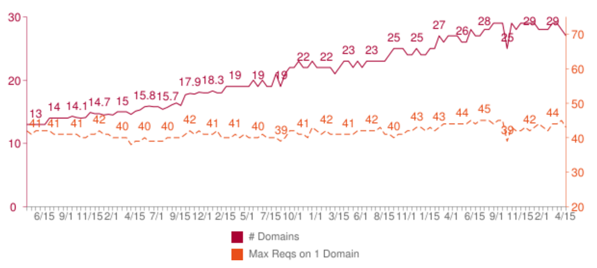
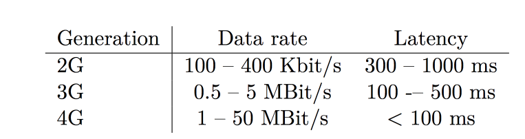
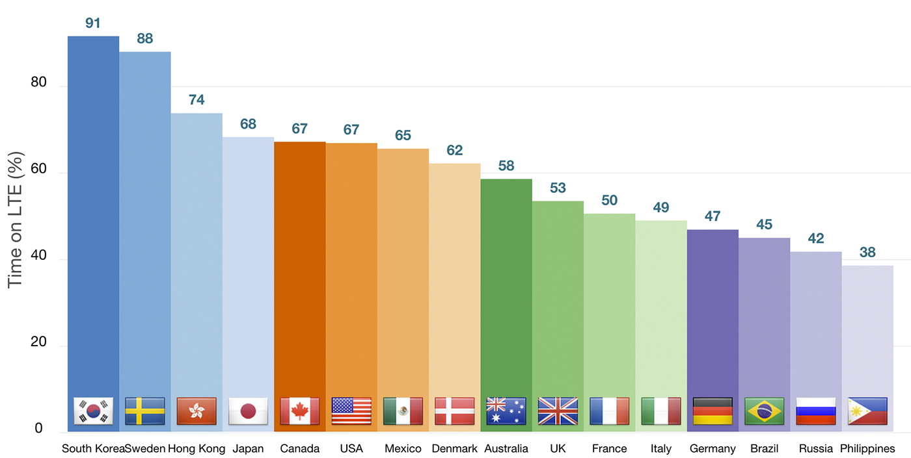
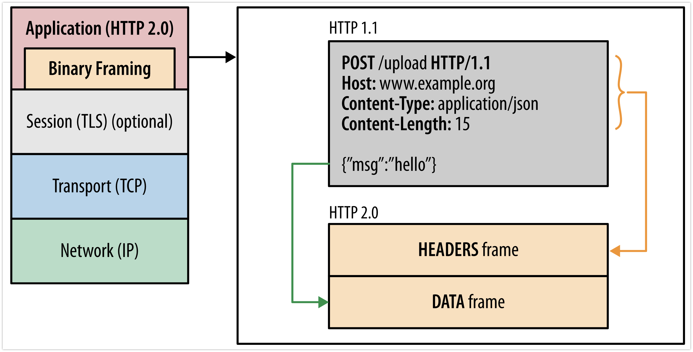
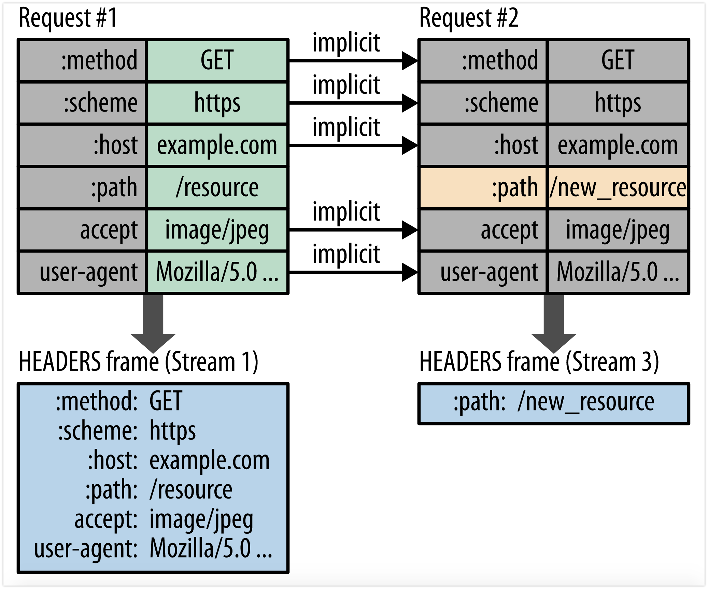
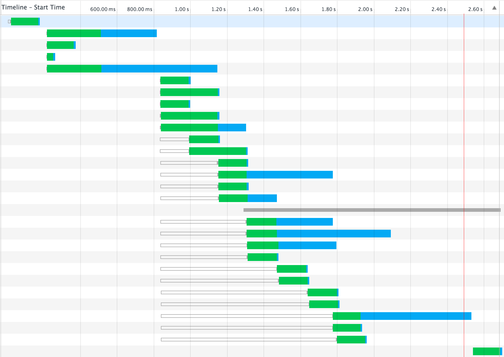
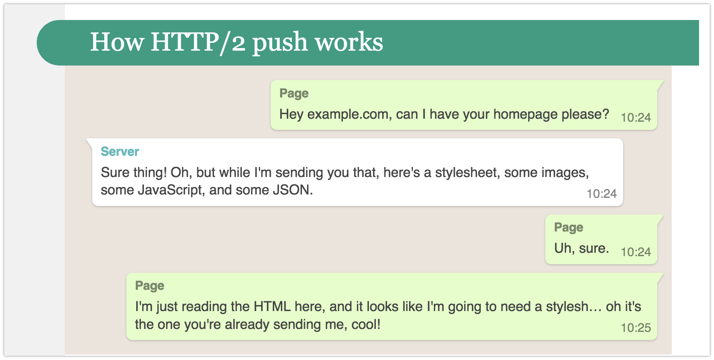
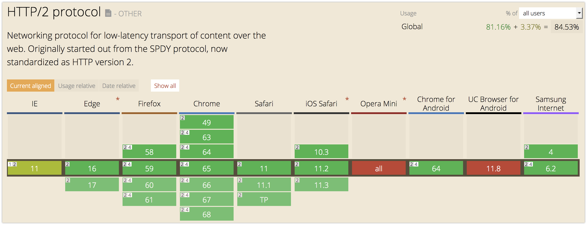

layout: true class: theme-whiskey, slides-centered --- name: cover # HTTP/2 Michael Jaser<br> Peerigon GmbH<br> [@mmeaku](https://twitter.com/mmeaku) --- layout: true class: theme-whiskey, slides-centered .slides-header[ HTTP ] --- class: slides-chapter ## HyperText Transfer Protocol (HTTP) --- ## Hyper Hyper <small>Source: pitpony.photography - Eigenes Werk, CC BY-SA 3.0, https://commons.wikimedia.org/w/index.php?curid=47900133</small> --- <small>Source: Paul Clarke [CC BY-SA 4.0](https://creativecommons.org/licenses/by-sa/4.0), from Wikimedia Commons</small> --- ## HTTP 0.9 The first version of HTTP was releases in 1991 by Sir Tim Berners-Lee as a very simple text based protocol: * Client sends requests as a single ASCII line terminated by CRLF (carriage return) * Server responds with a byte stream of ASCII characters representing the HTML document * The connection closes when the transfer completes or fails --- .slides-label[Example] .slides-content[  ] --- .slides-label[Example]  --- ## HTTP/1.0 With the internet boom of the early 1990is HTTP was adopted quickly and HTTP/1.0 was standardised in May 1996 as RFC 1945. --- ### Major changes of HTTP/1.0 - Request may contain multiple header fields separated by newline - Response is prefixed with a status (i.e. 200, 404, 500) - Response is not limited to hypertext anymore 🖼️🎶🎬 --- ## HTTP/1.1 Shortly after the publication of HTTP/1.0 the successor named HTTP/1.1 was defined as RFC 2068 and finally released as RFC 2616 in 1999. --- ### Major changes of HTTP/1.1 - PATCH / LINK methods - Connection Keep-Alive - Chunked encoding transfer - Byte-range requests - Request pipelining --- layout: true class: theme-whiskey, slides-centered .slides-header[ Motivation ] --- class: slides-chapter count: false ## Motivation for HTTP/2 --- ## Average Website size: +300% in 5 years <img src="./assets/website-size.png" style="width:60vw" /> --- ## Requests per Domain .slides-content[  ] --- ## Waiting causes stress <img src="./assets/mobile-delays-stress.png" style="width: 50vw" /> --- ## 💡 But: We have more bandwith than 10 years ago! Everyone should be able to download pages fast enough? --- <img src="./assets/rtt-bandwith.png" style="width: 60vw" /> <small>https://docs.google.com/a/chromium.org/viewer?a=v&pid=sites&srcid=Y2hyb21pdW0ub3JnfGRldnxneDoxMzcyOWI1N2I4YzI3NzE2</small> --- ## 💡 BUT: We have fast connections and CDNs! Everyone should be able to download pages fast enough? --- ## Recap: Latencies <img src="./assets/latency-fixed.png" style="width: 30vw" />  --- ## How does this affect internet users worldwide? <img src="./assets/internet_users_by_country.png" style="width: 60vw" /> --- ## But how about the US / Europe / ...  --- ## Bandwidth doesn't matter (much) - latency is more important than bandwidth - latency might be bad, even in highly developed countries - roundtrips are expensive - see [Mike Belshe's Blog Post](https://docs.google.com/a/chromium.org/viewer?a=v&pid=sites&srcid=Y2hyb21pdW0ub3JnfGRldnxneDoxMzcyOWI1N2I4YzI3NzE2) --- layout: true class: theme-whiskey, slides-centered .slides-header[ HTTP/2 ] --- class: slides-chapter ## HTTP/2 --- - HTTP/1.1 was standardized in 1997 (20 years ago!) - the web changed a lot - too many workarounds (i.e. domain sharding) - started as SPDY - standardized 2015 --- class: slides-chapter ## Features --- ## Binary transport  <small>Source: https://developers.google.com/web/fundamentals/performance/http2/</small> --- ## Binary transport - chunks of communication are called _frames_ - frames belong to so-called _streams_ - uses binary format instead of ASCII (HTTP 1.x) - harder to inspect, but easier to implement and optimize --- ## Header Compression  <small>Source: https://developers.google.com/web/fundamentals/performance/http2/</small> --- ## Header Compression - we use many headers - headers are sent with every request - we already compress the body... - let's just compress headers too! --- ## HTTP 1.x problem: Head of line blocking (HOL) <img src="./assets/http-max-connections.png" style="width: 30vw" /> - max 6 concurrent connections per domain - wait for response before dispatching next request - Workaround: Domain sharding i.e. img.peerigon.com --- ## TCP slow start --- ## Solution: Connection multiplexing - connections are expensive - Goal: A single connections per origin - Requests are multiplexed => cheap request :) - no more HOL --- ## HTTP/1.1  --- ## HTTP/2 <img src="./assets/newhttp2.png" style="width: 40vw" /> --- ## Stream Prioritization --- ## Server Push  <small>Source: https://jakearchibald.com/2017/h2-push-tougher-than-i-thought/</small> --- ## Server Push - ability to provide data for the client in advance - i.e. if you request index.html, the server sends style.css too - loaded only if the client approves (loads the ressource) - not like websocket "push" - https://jakearchibald.com/2017/h2-push-tougher-than-i-thought/ --- ## Encryption by default - not officially in the spec - implemented as SSL-only by all Browsers --- ## HTTP/2 vs. HTTP 1.x? - HTTP/1 optimizations are antipatterns when upgrading to HTTP/2 - sending multiple requests is not a big deal anymore (i.e. polling, REST) - the best way to optimize HTTP 1.x is upgrading to HTTP/2 --- ## Optimizing for HTTP/2 - ~~Apply domain sharding~~ Minimize origins - ~~Bundle resources to reduce HTTP requests~~ Prefer separate requests - ~~Inline small resources~~ Consider seperate requests - Use server push to elmininate roundtrips - see https://hpbn.co/optimizing-application-delivery/#optimizing-for-http2 --- ## Comparison: Fetching data <img src="./assets/load-time-batch-multiple.png" style="width: 80vw" /> --- ## Node.js Example - [Compatibility API](https://nodejs.org/api/http2.html#http2_compatibility_api) --- ## Browser Support  - 85% supported --- ## Thank you